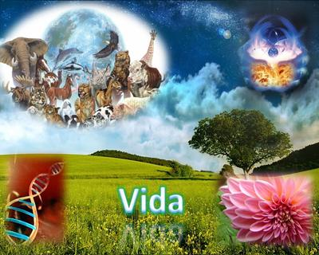

Desde tiempos antiguos, sacerdotes, filósofos y poetas han hablado de «la vida» como de un concepto mágico o abstracto, como de un misterio insondable dotado de propósito trascendental. Y entre discursos y discusiones sobre «el alma», «la chispa vital» o «el sentido de existir», se ha forjado la idea de que la vida posee una esencia mística que escapa a cualquier análisis concreto o material. Un preconcepto que sigue vivo hasta hoy, alimentado principalmente por las religiones, que prefieren lo sobrenatural a una explicación racional.


Actualmente, sin embargo, tanto la biología como la bioquímica, nos brindan un enfoque muy diferente: la vida no es magia en absoluto, es un proceso físico-químico organizado. La vida no es una idea abstracta ni un regalo celestial, sino un fenómeno natural que emerge bajo determinadas condiciones. Y esto no es una opinión personal, sino una conclusión basada en evidencia.
En efecto, desde el punto de vista de la biología es posible definir la vida con criterios operativos muy claros: La vida es un sistema químico capaz de mantener un metabolismo autónomo, para autorreplicarse con variación heredable, y evolucionar mediante la selección natural.
Esto significa que un ser vivo:
Se organiza molecularmente.
Mantiene metabolismo (procesos que intercambian energía y materia con el entorno).
Responde a estímulos.
Se reproduce (sexualmente o no).
Evoluciona a lo largo de generaciones.
Así que, como vemos, no hay nada de «alma», nada de «soplo divino», nada trascendente. Sólo química compleja y autoorganizada. Algo a lo que las religiones proporcionan respuestas simples para mentes antiguas. Así, el relato bíblico nos dice que la vida surgió por un acto de magia divino: «Jehová Dios formó al hombre del polvo de la tierra y sopló en su nariz aliento de vida» (Génesis 2:7). Y el Corán (en Sura 38:71-72) repite el mismo mito con ligeros adornos literarios: «Voy a crear un ser humano a partir del barro. Y cuando le haya dado forma y haya insuflado en él parte de Mi espíritu: ¡Caed postrados ante él!»[1]
Así, ambos textos atribuyen el origen de la vida a un acto sobrenatural: barro + soplo mágico = ser humano. Y cuando ese soplo se va, llega la muerte (Eclesiastés 12:7).
Sin embargo, eso de «espíritu» es sólo un eufemismo antiguo para ocultar la ignorancia científica, porque esas historias reflejan lo que realmente eran: intentos ingenuos de explicar fenómenos naturales sin ciencia disponible. En ningún libro sagrado, «Dios» menciona células, ADN, metabolismo, ni evolución, aunque sea con otros nombres. ¿Por qué? Porque son textos escritos en edades primitivas, por personas sin conocimientos científicos. Pero el principal problema no es que estuvieran equivocados, sino que todavía hoy haya quienes los tomen como verdad absoluta: como «palabra de Dios».
Afortunadamente, gracias a la ciencia ya no necesitamos de dioses para tratar de explicarnos qué es la vida. Como tampoco tenemos que acudir a especulaciones filosóficas sin respuesta concreta. Lo que necesitamos es bioquímica, termodinámica y evolución. Ahora sabemos que el humano es un ser vivo como cualquier otro; es decir, un organismo complejo, compuesto por una o más células, que posee la capacidad de realizar funciones como el intercambio de materia y energía con su entorno, mantener un estado de equilibrio interno (homeostasis), y evolucionar a lo largo del tiempo. Experimentamos lo que es vida tanto nosotros como una mosca, una lombriz o una ameba, cada quien como puede. No hay privilegios, sólo opciones evolutivas. No hay nada de mágico, ni trascendente, ni filosófico en eso.
Entendemos ahora que lo que separa a un ser vivo de algo inerte no es un «soplo divino», sino el metabolismo. Que mientras hay metabolismo, hay vida. Y que cuando el metabolismo cesa, se produce la muerte. Así de simple.
Sabemos también que el metabolismo sólo es posible gracias a la organización celular y al ADN, que almacena instrucciones para construir proteínas y replicarlas. Sabemos, por tanto, que la vida es, en esencia, información genética organizada que lucha contra la entropía usando energía. Y que eso no lo inventó ningún «Dios»; lo seleccionó la evolución durante 3.500 millones de años.
Pero entonces, ¿cómo se originó la vida? —Pues, no fue mediante ningún acto de magia. Fue mediante un proceso que la ciencia llama «abiogénesis», que es el paso natural de la química prebiótica, a sistemas autorreplicantes. Y eso no fue algo instantáneo ni milagroso. Fue gradual:
Moléculas simples (agua, metano, CO₂, amoníaco).
Moléculas orgánicas (aminoácidos, lípidos, nucleótidos).
Polímeros (ARN primitivo autorreplicable).
Protobiontes (vesículas lipídicas con metabolismo rudimentario).
Células ancestrales → evolución → toda la biodiversidad actual.
Así que nunca necesitamos de una varita mágica ni de ningún «aliento divino». Sólo de condiciones naturales, y muchísimo tiempo.
En fin, para aclarar conceptos, veamos cómo responde a preguntas esenciales la religión en comparación con la ciencia; es decir, la realidad vs. el mito:
-
¿Qué es la vida?
Religión: El aliento de «Dios» / el alma.
Ciencia: Metabolismo y evolución.
-
¿Cómo surgió la vida?
Religión: Por creación mágica.
Ciencia: Por abiogénesis.
-
¿Qué mantiene la vida?
Religión: El espíritu.
Ciencia: La bioquímica.
-
¿Por qué los seres vivos mueren?
Religión: Porque el alma se va del cuerpo.
Ciencia: Porque el metabolismo se detiene.
-
¿Cómo sabemos todo esto?
Religión: Por fe.
Ciencia: Por evidencia.
Pero entendamos que las religiones se equivocan no por ser malvadas, sino porque son humanas y primitivas. Fueron escritas cuando la humanidad aún creía que los relámpagos se producían por enfado de los dioses.
Hoy, sin embargo, debemos tenerlo tan claro que no deberíamos necesitar mencionarlo: la vida no es algo abstracto, etéreo o metafísico. Más bien la vida es algo que estás experimentando aquí y ahora. Y tampoco es algo que vino del cielo. Más bien es algo que brotó de la materia; pero no por un milagro, sino por evolución molecular. Para nosotros debe ser evidente que:
No existe ninguna «chispa divina».
No existe un «alma» fuera del cerebro.
No existe ningún «aliento divino».
Lo que sí existe es materia organizada, energía y evolución. Y eso es suficiente para explicar la vida, además de ser mucho más fascinante que cualquier mito religioso. La vida pues, no necesita de magia ni de especulaciones sin fin. La vida es química que aprendió a replicarse. Punto.
[Godless Freeman]
[Crédito de imagen: Biblioteca de Investigaciones/Wordpress]
Comentarios
Comments powered by Disqus